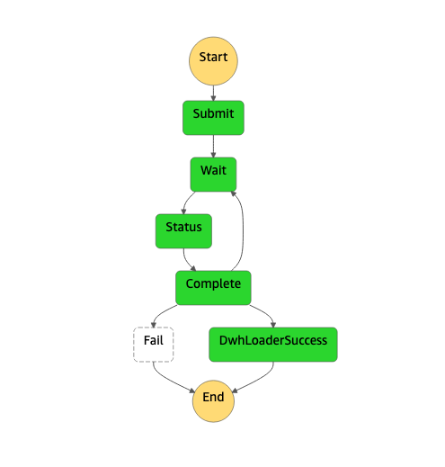

Data Warehouse Solutions
Orchestrating stored procedures based data warehouse ELT¶
Challenge/Issue¶
There are multiple solutions to trigger SQL queries and stored procedures in Amazon Redshift, but some comes with challenges including timeouts and error handling. This solution demonstrate how to orchestrate ELT jobs in the data warehouse from a workflow management tool.
Solution¶
MyStore is using ELT approach to load and then transform data into its Data Warehouse. The ELT scripts (Amazon Redshift stored procedures) are triggered by an AWS Step Function state machine via Amazon Redshift Data API. The Data API is asynchronous and has many advantages compared to other approaches:
- The solution is cheap. A state is an AWS Lambda function invocation that submit a statement and then shutdown. There isn't any resources running while waiting for the ELT to finish.
- There isn't any risk of timeout like with a synchronous call. AWS Lambda function have a timeout of 15 minutes, if the statement is taking longer to proceed, the workflow may lose the statement execution status.
- Network errors are fully handled by the state machine which regularly poll for the statement status. With synchronous calls, network communication errors with the client cancels the statement.
Here is the graphical representation of the state machine 
- The Submit state is an AWS Lambda function that calls the Amazon Redshift Data API execute_statement command
- The Wait state is waiting for 30s before polling for statement status
- The Status state is an AWS Lambda function that call the Amazon Redshift Data API describe_statement command
- The Complete state is checking if the status is FINISHED. If not it loops back into the Wait and Status states. If the statement status is FAILED, the state machine goes into ERROR state. If it's FINISHED, it goes to DwhLoaderSuccess
For security reasons, Amazon Redshift Data API are session scoped so only submitters can see their statements. Currently, the session is based on the AWS Lambda function name, so the AWS Step Function state machine is using the same AWS Lambda function for both submitting statement and polling the statement status.
Here is the code for the AWS Lambda function
Optimizing load performance for Slowly Changing Dimensions in the Data Warehouse¶
Challenge/Issue¶
A common requirement of the Data Warehouse is to build Slowly Changing Dimensions to track history and last version of data. For example, to be able to match sales fact records to store_customer dimension records it requires scanning historical data in store_customer table to find the latest record. Each update of the customer is generating a new record in store_customer table. With a time many historical records are accumulated, as a result a lookup query performance will degrade. Bottom line the described approach is not scalable.
Solution¶
To be able to always query the latest state of the record and keep the amount of historical records limited, MyStore introduced the usage of Apache Hudi. AWS Glue clean job is writing directly to Amazon S3 in Hudi format. To have more details about the write implementation and Hudi configuration please look at raw2clean_hudi.py.
Hudi format is not supported by AWS Glue Crawler, nevertheless Hudi is supporting the synchronisation with Hive metastore out of the box. To prevent AWS Glue Crawler failure MyStore configured store_customer and store_customer_address tables as exclusions crawler.py. To enable Hive metastore sync, the AWS Glue job is using the Hudi configuration hoodie.datasource.hive_sync in raw2clean_hudi.py. You can find more details about Hudi configuration on this page.
Hudi is managing the number of historical records automatically and limited according to the configuration parameter hoodie.cleaner.commits.retained, which is configured to 10.
Using Apache Hudi MyStore can guarantee that Amazon Redshift Spectrum lookup query performance is not affected by the number of historical updates in store_customer and store_customer_address tables and will always get the lately updated record.